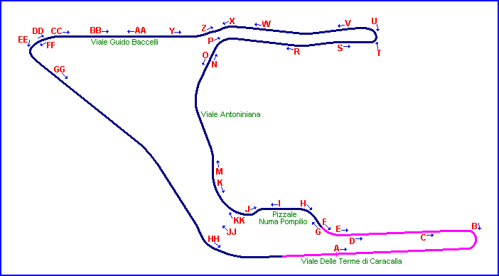

Terme di Caracalla- Roma, Italy
Type: Street Circuit
Length: 2.138 Miles // 3.440 km
Used: 1947 - 1951
Photographs Taken: 1st June, 2003
This street circuit around the historic Terme di Caracalla in Rome hosted the Gran Premio di Roma from 1947 to 1951. It is famous as being the venue which recorded the first ever victory for a Ferrari (that was constructed independantly of Alfa Romeo), when Franco Cortese drove his 125C sportscar to first place in the 9th Gran Premio di Roma on the 25th May, 1947. Fifty years later, a parade was held on a circuit of nearby public roads to commemorate this maiden win for the Scuderia.
|| Contents | Page 1 | Page 2 | Page 3 | Page 4 | Page 5 || Home ||

Letters and arrows on the map represent the direction and location of where the pictures
were taken. Click links above to view the photographs.
Return to racingcircuits.net's Photo Archive Main Index
Photographs ©Barry Boor. Reproduced here with kind permission.